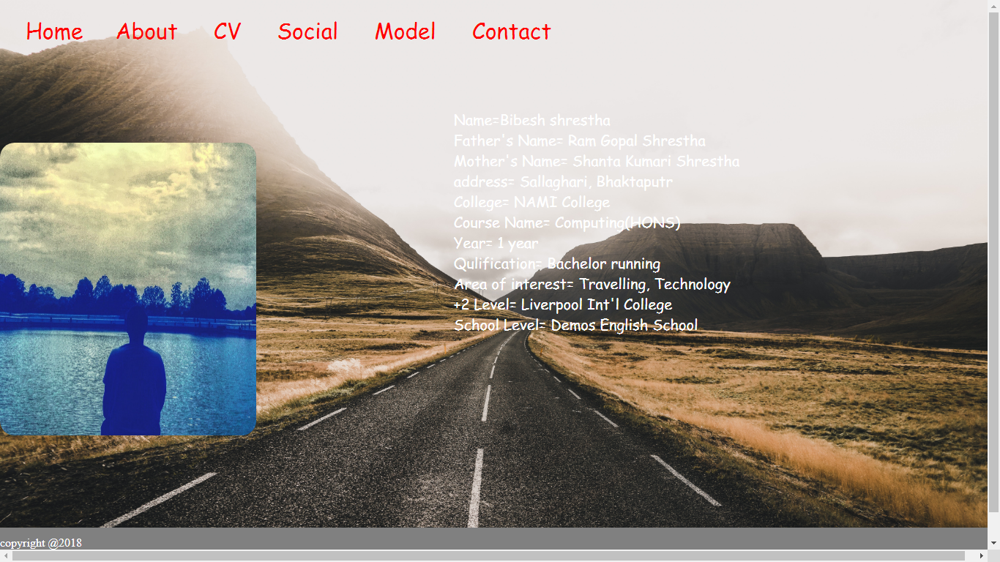

introduction
Webpage designing is defined as the designing of websites interface. html and CSS is used for webpage designing.For designing part CSS is used and for basic structure html is used.,
wireframe
wireframe is defined as rough drawing or layout of websites. wire frame of my website consists of my name , background , navigation, color footer and so on.
homepage wireframe
in my home i have added different content for making by home page attractive and eye catchy.personal photo are added in the home page of my offical website. height, width, margin,font-style are used for making my home page
about page wireframe
this page also contains photo and information of me. margins is used but not so high. footer is used in less amount.
CV wireframe
C.V is the main part in my website. this part contain major information about me. this part also containmy photo. this page also contain footer
contact page wireframe
this page is form by using div where the first name, surname , and email address add for contACTING ME. map is also added using the margin.
social wireframe
This is the social page of my personal CV website, which include the social link of the different social sites. https://www.flaticon.com/packs/social-network-logo-collection this is the site from where the icon pack is taken. The icon has the hover opacity effect animation. The design is original and not taken from any of the websites.

validation
the validation were done to see how the websites works.
validation of html
this are the validated screenshot of my html.
Conclusion
various sites were searched for my assignment and took help from them and planned how the webpage should be made, and finally, the website were designed
Reference
https://www.w3schools.com/
https://validator.w3.org/